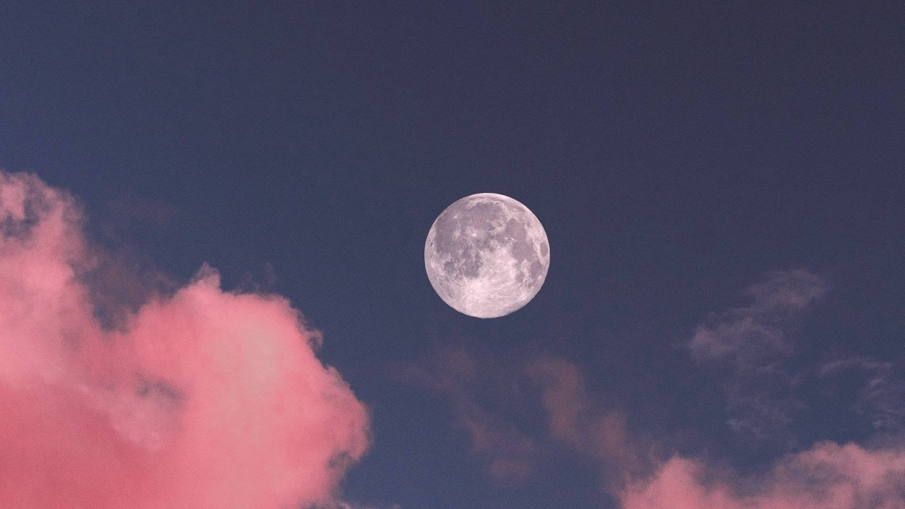

In the world of photography, you get to share a captured moment with
other people
Let them see what you captured
further details click the button below
The magic happens not only in the moment of capturing the image but also
in the process of developing and editing. In the age of digital
photography, the darkroom has transformed into a digital workspace where
photographers can enhance, manipulate, and fine-tune their images,
pushing the boundaries of creativity even further.

Let them see what you captured
further details click the button below
The magic happens not only in the moment of capturing the image but also
in the process of developing and editing. In the age of digital
photography, the darkroom has transformed into a digital workspace where
photographers can enhance, manipulate, and fine-tune their images,
pushing the boundaries of creativity even further.